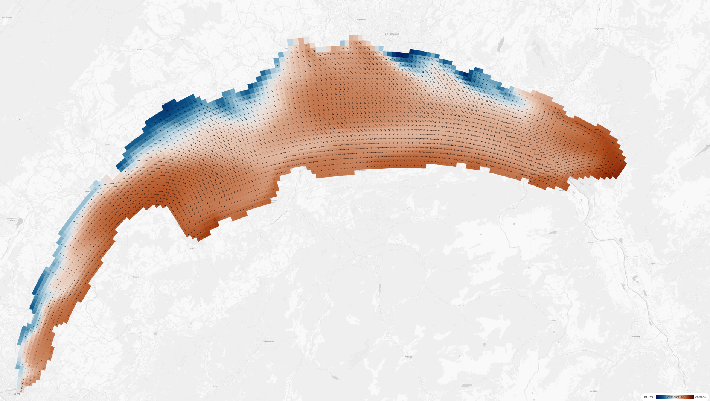
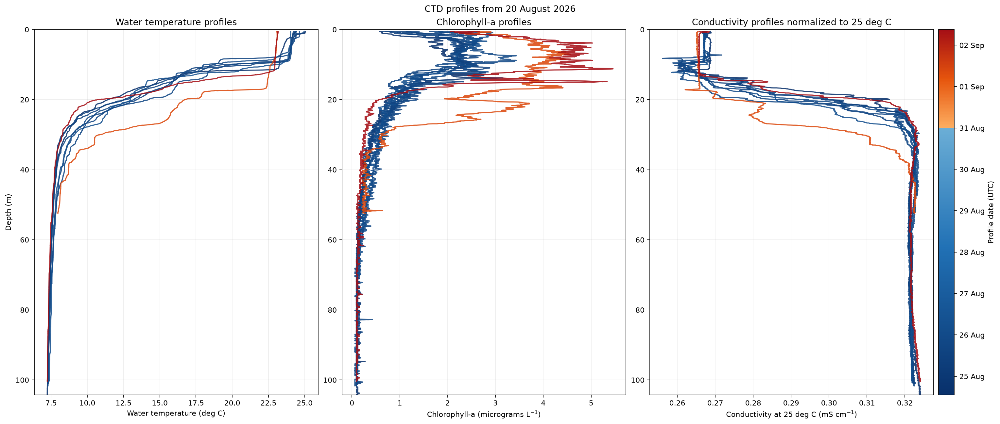
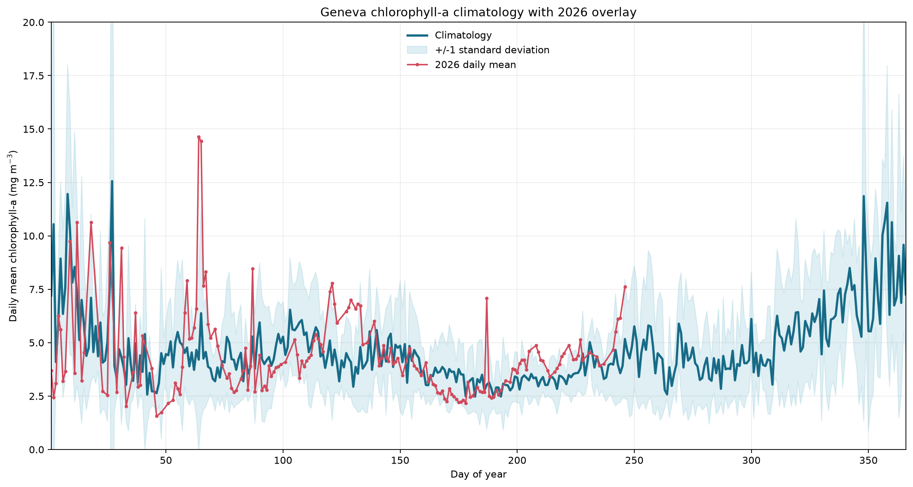
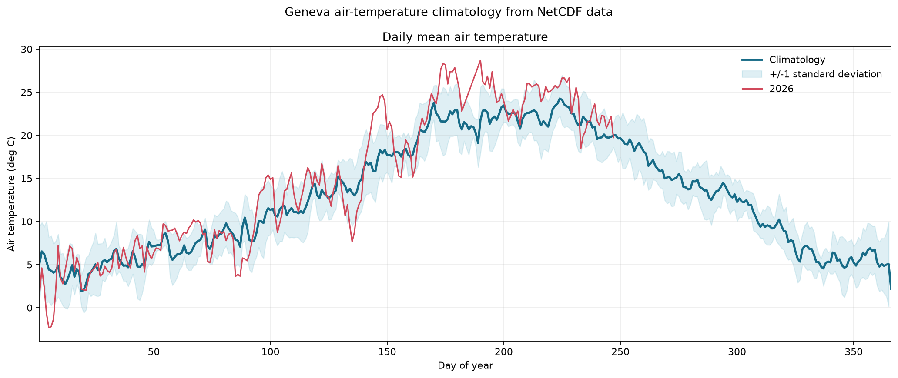
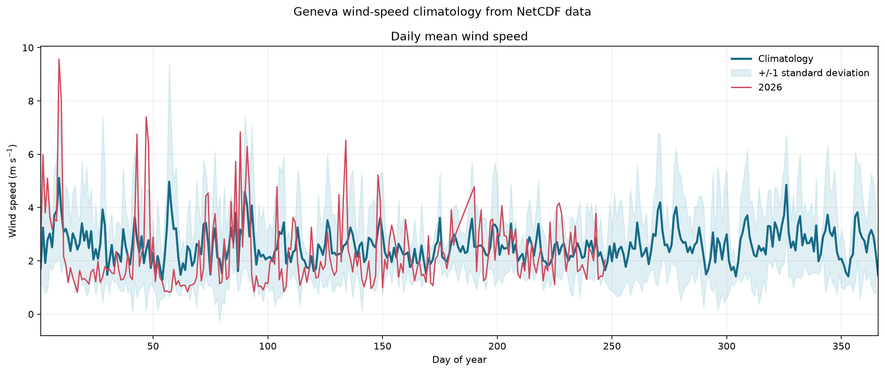
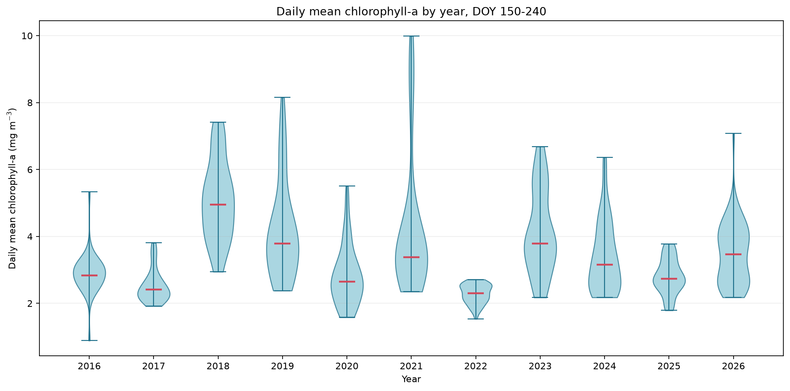

You may have noticed that the lake's water turned turbid and green in a matter of days. Satellite images confirmed that while low on August 25th, the amount of algae has doubled as of today.
Weather since 20 August 2026. Air temperature, irradiance, and wind speed are shown at the native 10-minute resolution; arrows indicate dominant daily wind direction. Source: DataLakes
Commentary
Over the weekend and throughout Monday, the north-easterly wind blew consistently. The weather has been quiet and sunny since Tuesday.
Page 02 / Water column
Heat, mixing, and the water column
The temperature 3D model and CTD profiles provide the vertical context behind the surface signal.
Surface water temperatures from 28 August to 3 September 2026. Source asset: AlpLakes

31 August temperature snapshot showing upwelling along the northern shore. Source: AlpLakes
As the wind blew continuously from the northeast, it pushed warm surface waters to the south-western shore, leading to downwelling downwind and upwelling upwind.
Page 03 / CTD profiles
What the water column reveals
The CTD profiles show how temperature, chlorophyll-a, and conductivity vary with depth during the event.

CTD depth profiles after 20 August 2026: water temperature, chlorophyll-a, and conductivity normalized to 25 degrees C. Profiles are colored by date.
Commentary
The wind event tilted and deepened the thermocline and brought colder water to the surface. Deep cold waters are rich in nutrients, and sunny conditions can support algal growth after that nutrient supply reaches the surface.
Page 04 / Context
Is this unusual?
The bloom is sudden, but the climatology of remote-sensed chlorophyll for the lake over the last 11 years shows that this return in algal growth is typical for late summer.

Geneva chlorophyll-a day-of-year climatology with 2026 observations overlaid.

Mean air-temperature climatology with 2026 overlaid, 2019-2026.

Mean wind-speed climatology with 2026 overlaid, 2019-2026.

Annual distributions of daily mean chlorophyll-a for days 150-240.
Commentary
The 2026 wind regime has been within typical observed values since 2019. Despite a particularly warm summer, the amount of algae has remained consistent with values observed in previous years. Wind-driven upwellings and seiches are transient but recurrent mechanisms that restore nutrients to surface waters in Lake Geneva during summer.
Over the weekend and throughout Monday, the north-easterly wind blew consistently. The weather has been quiet and sunny since Tuesday.